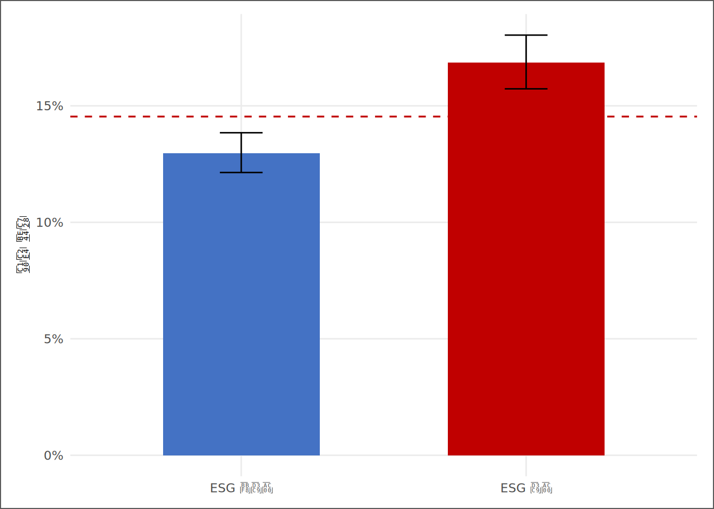
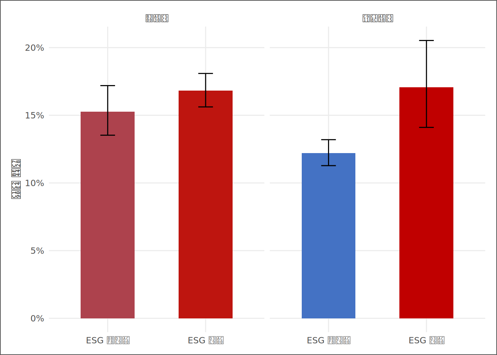

# | 키워드 | 한 줄 핵심 |
|---|---|---|
1 | 대리인 이론 (Agency Theory) | 소유자와 경영자의 이해 충돌 — 감시가 이를 완화하거나 심화한다 |
2 | 이해 정렬 vs 참호구축 | 감시가 부실을 줄인다는 가설과, 오히려 사익추구를 키운다는 가설 |
3 | 외부 감시 대리변수 | 지분율 데이터 부재 → ESG 평가 여부로 외부 감시를 대리 |
4 | 손실 비율 (이항 비율) | 0/1 손실 사건의 평균 — 집단별로 비교하는 부실 위험의 척도 |
5 | Wilson 신뢰구간 | 비율의 95% 구간을 [0,1] 안에서 보정해 불확실성을 표현 |
6 | 조절효과 (Moderation) | X→Y 관계의 크기가 제3변수(기업 규모)에 따라 달라지는 구조 |
소유구조와 기업 부실화 — 외부 감시는 부실을 막는가
“주인이 멀리 있을수록 곳간은 빨리 빈다. 문제는 누가 그 곳간을 지키는가다.”
사례로 시작하기
KG Asset 운용회의에서 한 임원이 물었다. “ESG 평가를 받는 기업이 정말 더 안전한가, 아니면 그냥 큰 회사라서 평가를 받는 것뿐인가?” 김자산에게 떨어진 7주차 과제였다. 회사를 지키는 것은 결국 사람이다. 주주가 경영자를 얼마나 가까이서 지켜보는가 — 대리인 이론은 이 거리를 기업 부실의 핵심 변수로 본다. 김자산은 곧 한 가지 벽에 부딪혔다. 데이터에는 대주주 지분율 컬럼이 없었다. 파수꾼이 누구인지 직접 적힌 칸이 없는 것이다.
그래서 자산은 우회로를 택했다. ESG 평가를 받는다는 것은 평가기관·투자자·언론이라는 외부의 눈이 그 기업을 들여다본다는 뜻이다. 지분율을 대신해, 외부 감시의 존재 여부를 ESG 평가 여부(is_esg_rated)로 대리하기로 했다. 완벽한 대리는 아니다. 그러나 “감시받는 기업은 덜 무너지는가”라는 질문에 데이터로 답을 시작할 수는 있다.
이 장의 주제는 하나다 — 외부 감시와 기업 부실의 조건부 관계, 그리고 그 관계가 기업 규모에 따라 달라지는가(조절효과). 손실은 0 또는 1의 이진 사건이므로, 비율의 불확실성을 정직하게 표현하는 Wilson 신뢰구간을 함께 쓴다.
핵심 키워드
학습 목표
이 장을 마치면 다음 여섯 가지를 할 수 있다.
- 대리인 이론의 두 경쟁 가설(이해 정렬 효과·참호구축 효과)을 설명하고 예측 방향을 구분할 수 있다.
- 지분율 데이터가 없을 때 외부 감시를 대리하는 변수를 선택하고 그 한계를 진술할 수 있다.
- 집단별 손실 비율을 계산하고 Wilson 신뢰구간으로 불확실성을 표현할 수 있다.
prop.test로 두 집단의 손실 비율 차이를 검정하고 결과를 해석할 수 있다.- 손실 비율과 신뢰구간을 막대·오차막대·기준선으로 시각화할 수 있다.
- 기업 규모가 감시-부실 관계를 조절하는지 패싯 분석으로 확인하고 의사결정으로 번역할 수 있다.
D→I→K→W 4단계 파이프라인
| 단계 | 이 장에서의 모습 |
|---|---|
| 데이터 (D) | 기업-연도 패널 — is_esg_rated, Loss_Dummy, Size |
| 정보 (I) | 감시 대리 집단별 손실 비율과 Wilson 신뢰구간 |
| 지식 (K) | 외부 감시와 부실의 조건부 관계, 규모에 따른 조절효과 |
| 지혜 (W) | “어떤 기업을 더 면밀히 들여다봐야 하는가” — 위험 선별 판단 |
데이터 출처와 수집
데이터 | 변수 | 이 장의 역할 |
|---|---|---|
외부 감시 대리 | is_esg_rated (0/1) | ESG 평가 여부 — 지분율을 대신한 외부 감시의 대리지표 |
부실 사건 | Loss_Dummy (0/1) | 당기순손실 여부 — 기업 부실의 이진 척도 |
기업 규모 | Size = log(자산총계) | 조절변수 — 외부 감시 효과가 규모에 따라 달라지는지 검토 |
실습 편의를 위해 완성 SSOT를 먼저 사용한다. 단, 이 데이터의 생성 과정과 책임은 3~5장에서 처음부터 검증한다. SSOT에는 대주주·최대주주 지분율 컬럼이 존재하지 않는다. 따라서 이 장은 외부 감시를 ESG 평가 여부로 대리한다 — 평가를 받는 기업일수록 외부의 눈에 더 많이 노출된다는 가정이다. 이 대리는 불완전하며, 역인과(성과가 좋은 기업이 ESG 평가를 더 받을 수 있음)의 가능성을 배제하지 못한다. 이 한계는 결론을 읽는 내내 함께 기억해야 한다.
이론 — 대리인 이론과 두 개의 가설
Jensen & Meckling(1976)의 대리인 이론에 따르면, 소유자(주주)와 경영자(대리인) 사이에는 이해 충돌이 발생한다. 외부 감시는 이 충돌을 두 방향으로 바꿀 수 있다.
| 가설 | 내용 | 예측 방향 |
|---|---|---|
| 이해 정렬 효과 | 외부 감시가 강할수록 경영자의 사익추구가 억제된다 | 감시↑ → 손실 비율↓ |
| 참호구축 효과 | 감시가 형식에 그치면 경영진이 외부 견제를 차단하고 위험을 키운다 | 감시↑ → 손실 비율↑ 또는 무관 |
어느 효과가 지배적인지는 데이터가 답한다. 그리고 그 답은 기업 규모에 따라 다를 수 있다 — 대기업은 이사회·기관투자자·감사인이라는 감시 인프라가 두텁고, 중소기업은 그 공백이 크기 때문이다.
실험 1 — 외부 감시 집단별 손실 비율
# ① SSOT 적재 후 분석 변수만 정리
ssot <- read_book_csv(ssot_path)
df <- ssot |>
dplyr::filter(!is.na(Loss_Dummy), !is.na(Size), !is.na(is_esg_rated)) |>
dplyr::mutate(
감시 = factor(is_esg_rated, levels = c(0, 1),
labels = c("ESG 미평가", "ESG 평가"))
)
# ② 감시 집단별 손실 비율 + 손실기업수
grp <- df |>
dplyr::group_by(감시) |>
dplyr::summarise(N = dplyr::n(),
손실기업수 = sum(Loss_Dummy),
손실비율 = mean(Loss_Dummy),
.groups = "drop")
# ③ 각 집단 손실 비율에 Wilson 95% 신뢰구간 부착
ci_mat <- t(mapply(function(x, n) wilson_ci(x, n), grp$손실기업수, grp$N))
grp$CI하한 <- ci_mat[, 1]
grp$CI상한 <- ci_mat[, 2]코드 읽기. ①의 factor(is_esg_rated, labels = ...)는 0/1 숫자를 “ESG 미평가/ESG 평가”라는 읽을 수 있는 집단 이름으로 바꾼다. ②의 mean(Loss_Dummy)는 0/1 더미의 평균이므로 곧 손실 비율이다 — 100개 기업 중 30개가 손실이면 0.30이다. ③의 mapply()는 두 집단 각각에 wilson_ci(손실기업수, N)를 적용해 신뢰구간 하한·상한을 한 번에 구한다. t()로 행렬을 돌려 집단별 한 행이 되도록 맞췄다. 이항 비율에 일반 신뢰구간을 쓰면 하한이 음수가 될 수 있는데, Wilson 구간은 그 문제를 수학적으로 보정한다.
감시 집단 | 기업수 | 손실기업수 | 손실비율 | Wilson 95% CI |
|---|---|---|---|---|
ESG 미평가 | 5,953 | 772 | 13.0% | [12.1%, 13.8%] |
ESG 평가 | 4,047 | 682 | 16.9% | [15.7%, 18.0%] |
ESG 평가 기업의 손실 비율은 16.9%, 미평가 기업은 13.0%다. 평가 기업의 손실 비율이 미평가 기업보다 높다. 두 집단 차이의 prop.test p값은 0.001 미만로, 이 차이는 통계적으로 유의하다. 두 집단의 Wilson 신뢰구간이 서로 겹치지 않는다면, 손실 비율의 차이가 표본 변동만으로 설명되기 어렵다는 더 강한 신호다.
실험 2 — 손실 위험 막대와 신뢰구간

막대의 색이 파란색에서 붉은색으로 갈수록 손실 비율이 높다. 오차막대가 빨간 기준선(전체 평균 14.5%)을 넘나드는지를 보면, 해당 집단이 평균과 유의하게 다른지를 눈으로 가늠할 수 있다. 두 집단의 오차막대가 겹치면 차이는 통계적으로 불확실하다.
실험 3 — 기업 규모의 조절효과
외부 감시의 효과가 모든 기업에서 같지는 않을 것이다. 대기업은 이미 감시 인프라가 두텁고, 중소기업은 그 공백이 크다. 규모로 표본을 나누어 감시-부실 관계가 달라지는지 확인한다.
# ① Size 중앙값으로 대기업 / 중소기업 이분
size_med <- median(df$Size, na.rm = TRUE)
df <- df |>
dplyr::mutate(규모 = ifelse(Size >= size_med, "대기업", "중소기업"))
# ② 규모 × 감시 집단별 손실 비율과 Wilson 신뢰구간
grp3 <- df |>
dplyr::group_by(규모, 감시) |>
dplyr::summarise(N = dplyr::n(),
손실기업수 = sum(Loss_Dummy),
손실비율 = mean(Loss_Dummy),
.groups = "drop")
ci3 <- t(mapply(function(x, n) wilson_ci(x, n), grp3$손실기업수, grp3$N))
grp3$CI하한 <- ci3[, 1]
grp3$CI상한 <- ci3[, 2]코드 읽기. ①의 ifelse(Size >= size_med, "대기업", "중소기업")는 로그 자산총계의 중앙값을 경계로 표본을 절반씩 가른다. ②는 실험 1의 집계를 규모 집단을 추가해 반복한 것이다 — 같은 절차를 한 축(규모) 더 쪼개어 적용하면 조절효과를 볼 수 있다. 분석 단계가 달라져도 손실 비율과 Wilson 구간을 계산하는 도구는 동일하다.

대기업 패널에서 감시 집단 간 손실 비율 격차는 약 1.55%p, 중소기업 패널에서는 약 4.87%p다. 격차의 차이가 곧 조절효과의 크기다 — 이 분석에서는 그 차이가 중소기업에서 더 크다 — 감시 공백이 큰 곳에서 외부 감시의 차이가 더 두드러진다. 두 패널의 기울기가 다르다는 것은, 외부 감시의 부실 억제 효과가 기업 규모라는 맥락에 따라 달라진다는 뜻이다.
분석가의 번역
점검 수치 | 기술적 의미 | 실무 번역 |
|---|---|---|
ESG 평가 손실 16.9% vs 미평가 13.0% | 외부 감시 대리 집단 간 부실 위험의 차이 | 감시받지 않는 집단을 더 면밀히 들여다볼 단서 |
차이 검정 p값 0.001 미만 | 차이가 표본 변동으로 설명되는지의 척도 | 유의하면 보고서에 차이를 인용, 아니면 한계로 명시 |
전체 평균 손실 14.5% | 위험 기준선 — 어느 집단이 평균을 넘는가 | 기준선 위 집단을 위험 선별 1순위 후보로 |
규모별 격차 차이 | 감시 효과가 규모에 따라 달라지는 정도(조절효과) | 중소·미감시 구간이 두드러지면 그곳에 실사 자원을 집중 |
이 표가 이 장의 메시지를 담는다. 외부 감시와 부실의 관계는 인과가 아니라 조건부 관계다. 그러나 그 조건부 관계가 어디서 가장 두드러지는가를 알면, 한정된 실사 자원을 어디에 먼저 쓸지 판단할 수 있다.
R로 직접 해보기
| IPO | 내용 |
|---|---|
| Input | In_class_R/11주차/Derived_SSOT_Dataset.csv |
| Process | 감시 대리(is_esg_rated) 집단별 손실 비율 → Wilson CI → prop.test → 막대·오차막대 → 규모 패싯 조절효과 |
| Output | Output/ch07_ownership_loss.csv (집단별 손실 비율·CI) |
| Report | “외부 감시와 부실” 1쪽 메모 (표 7.4 양식) |
난이도 | 분석 아이디어 | 확인 포인트 |
|---|---|---|
초심자 | 감시 집단을 ESG등급 구간(A·B·C)으로 세분해 손실 비율의 단조성을 본다 | 등급이 높을수록 손실 비율이 낮아지는가 — 단조 관계의 증거 |
초심자 | 연도별로 두 집단의 손실 비율 격차가 커지는지 추세를 그린다 | 격차가 벌어지면 감시의 가치가 시기에 따라 다름을 시사 |
초심자 | 부채비율_Win을 함께 보고, 감시 격차가 레버리지 차이로 설명되는지 점검한다 | 감시 격차가 레버리지로 흡수되면 대리변수의 한계를 드러냄 |
고급자 | 규모를 3분위로 나누어 조절효과가 단조적인지 비선형인지 확인한다 | 조절효과가 특정 규모 구간에 몰리는지 |
고급자 | ESG 평가 신규 편입 기업의 편입 전후 손실 비율 변화를 비교한다(준실험 설계) | 편입 전후 변화는 역인과를 일부 줄인 더 강한 증거 |
AI 협업 프로토콜 — 대리변수의 타당성은 사람이 판단한다
AI는 코드를 대신 쓰지만, “ESG 평가 여부가 외부 감시의 타당한 대리인가”라는 판단은 사람의 몫이다. 대리변수의 선택은 분석의 전제이고, 전제가 틀리면 결론도 틀린다. 오류가 나면 정답 코드를 곧바로 요구하지 말고, 오류의 원인 개념을 설명해 달라고 묻는 것이 먼저다.
수준 | 이 장의 행동 |
|---|---|
L1 (인식) | AI가 만든 손실 비율 표를 그대로 제출한다 |
L2 (적용) | AI 코드를 이해하고 Wilson 구간이 [0,1]을 지키는지 확인한다 |
L3 (분석) | AI에게 '이 대리변수의 타당성과 역인과 위험을 비판하라'고 요청하고 그 비판을 본문 한계에 반영한다 |
L4 (창의) | AI와 함께 ESG 신규 편입을 이용한 준실험 설계를 구상하고 코드로 구현한다 |
[프롬프트 1 — 대리변수 비판] “나는 대주주 지분율 대신 ESG 평가 여부(is_esg_rated)를 외부 감시의 대리변수로 썼다. 이 대리의 타당성, 역인과 위험, 그리고 결론을 약화시킬 수 있는 대안 해석을 비판적으로 지적해줘.”
[프롬프트 2 — 통계 해석 점검] “두 집단의 손실 비율과 Wilson 95% 신뢰구간, prop.test p값을 줄게. (1) 차이를 인과로 과장한 문장이 있는지, (2) 신뢰구간 겹침을 올바르게 해석했는지 점검해줘. [표 붙여넣기]”
정리, 함정, 다음 장
이 장을 한 문장으로 압축하면 이렇다. 외부 감시와 기업 부실은 조건부 관계를 가지며, 그 관계의 크기는 기업 규모라는 맥락에 따라 달라진다. 단, 이 결론은 지분율을 ESG 평가 여부로 대리한 위에 서 있다.
분석가가 빠지기 쉬운 함정 세 가지를 기억하라.
- 대리변수를 본래 변수로 착각하기. ESG 평가 여부는 외부 감시의 대리일 뿐 지분율이 아니다. 결론을 “지분율이 부실을 줄인다”로 확대하면 데이터가 말하지 않은 것을 말하는 것이다.
- 조건부 관계를 인과로 격상하기. 감시받는 기업이 덜 무너지는 것은, 감시가 부실을 막아서일 수도 있고 원래 건전한 기업이 평가를 더 받아서일 수도 있다. 역인과의 문은 닫히지 않았다.
- 비율의 불확실성을 무시하기. 표본이 작은 집단의 손실 비율은 점추정만 보면 위험하다. Wilson 구간의 너비를 함께 읽어야 한다.
다음 장(8장)에서는 두 집단의 평균 차이를 t검정으로 공식 검정하고, 효과크기로 그 차이의 실질적 크기를 잰다. 이 장이 “비율”을 비교했다면, 다음 장은 “평균”을 비교한다.
주차 PBL — 외부 감시와 부실, 1쪽으로 보고하라
Context. KG Asset 리스크팀은 한정된 실사 인력을 어디에 먼저 투입할지 정해야 한다. 이번 임무는 외부 감시 대리 집단별 부실 위험을 정량화하고, 규모 조절효과까지 반영해 “먼저 들여다볼 집단”을 근거와 함께 제시하는 것이다.
| 단계 | 미션 | 핵심 |
|---|---|---|
| Level 1 (필수) | 집단별 손실 비율표 | 감시 대리 집단별 N·손실기업수·손실비율·Wilson CI를 표로 |
| Level 2 (심화) | 위험 막대 시각화 | 손실 비율 막대 + Wilson 오차막대 + 평균 기준선 |
| Level 3 (확장) | 규모 조절효과 | 대기업/중소기업 패싯으로 격차 차이를 해석 |
| Level 4 (도전) | 실사 우선순위 메모 | 분석을 “먼저 들여다볼 집단” 한 문장 권고로 번역 |
| 평가 항목 | 배점 | 통과 기준 |
|---|---|---|
| 재현성 | 20 | 데이터 경로·코드·표본 수가 명시되어 재실행 가능 |
| 통계 정확성 | 30 | Wilson CI·prop.test를 올바르게 계산·해석 |
| 조절효과 해석 | 25 | 규모별 격차 차이를 조절효과로 정확히 읽음 |
| 의사결정 번역 | 25 | 결론이 실사 우선순위 권고로 번역됨 |
이 장의 자료
- 데이터:
In_class_R/11주차/Derived_SSOT_Dataset.csv - 전체 스크립트:
Script/ch07_ownership_loss.R - 산출물:
Output/ch07_ownership_loss.csv
AI 협업 권장. 대리변수의 타당성과 역인과 위험을 AI에게 비판하게 하되, 그 비판의 채택 여부는 데이터와 이론에 비추어 사람이 판단하라.
연습문제
문제 1. 이 장은 대주주 지분율 대신 is_esg_rated를 외부 감시의 대리변수로 썼다. (a) 이 대리가 타당할 수 있는 근거와 (b) 타당성을 약화시키는 위험을 각각 두 가지씩 들어라.
모범답안. (a) ESG 평가를 받는 기업은 평가기관·기관투자자·언론의 외부 감시에 더 노출되며, 평가 과정 자체가 지배구조·공시 품질을 점검하므로 외부 감시의 강도를 부분적으로 반영한다. (b) 첫째, ESG 평가 여부는 지분 구조를 직접 측정하지 않으므로 대주주의 사익추구라는 본래 메커니즘을 놓칠 수 있다. 둘째, 역인과 — 이미 건전하고 규모가 큰 기업이 ESG 평가를 더 받는 경향이 있어, 손실 비율의 차이가 감시가 아니라 기업의 사전적 우량성에서 비롯될 수 있다.
문제 2. 한 집단의 손실 기업이 100개 중 4개라고 하자. 일반 신뢰구간 대신 Wilson 구간을 권하는 이유를 설명하라.
모범답안. 손실 비율이 0이나 1에 가까울 때 일반 신뢰구간(p ± z·SE)은 하한이 음수가 되거나 상한이 1을 넘는, 비율로서 불가능한 값을 만든다. 4/100 = 4%처럼 0에 가까운 비율이 이런 경우다. Wilson 구간은 추정을 [0,1] 안으로 보정하므로 소표본·극단 비율에서도 해석 가능한 구간을 준다.
문제 3. 두 집단의 손실 비율 Wilson 신뢰구간이 서로 겹친다. 이로부터 무엇을 말할 수 있고, 무엇을 말할 수 없는가?
모범답안. 신뢰구간이 겹치면 두 집단의 손실 비율 차이가 통계적으로 유의하지 않을 가능성이 높다고 말할 수 있다 — 즉 차이가 표본 변동으로 설명될 여지가 크다. 그러나 “두 집단이 같다”거나 “감시가 효과가 없다”고 단정할 수는 없다. 비유의는 귀무가설의 수용이 아니라, 현재 표본과 검정력에서 차이를 확인하지 못했다는 뜻이다.
문제 4. 대기업 패널에서는 감시 집단 간 손실 비율 격차가 작고, 중소기업 패널에서는 크다고 하자. 이를 대리인 이론의 언어로 해석하고, 한 가지 대안 해석을 제시하라.
모범답안. 대기업은 이사회·감사인·기관투자자 등 외부 감시 인프라가 이미 두터워, ESG 평가 여부라는 추가적 감시의 한계 효과가 작다고 해석할 수 있다. 반면 중소기업은 감시 공백이 커서, 외부 감시의 유무가 부실 위험을 더 크게 가른다 — 조절효과의 전형적 패턴이다. 대안 해석: 중소기업에서 ESG 평가를 받는 기업은 그 자체로 자원·지배구조가 우월한 소수일 수 있어, 격차가 감시 효과가 아니라 표본 선택의 산물일 수 있다.